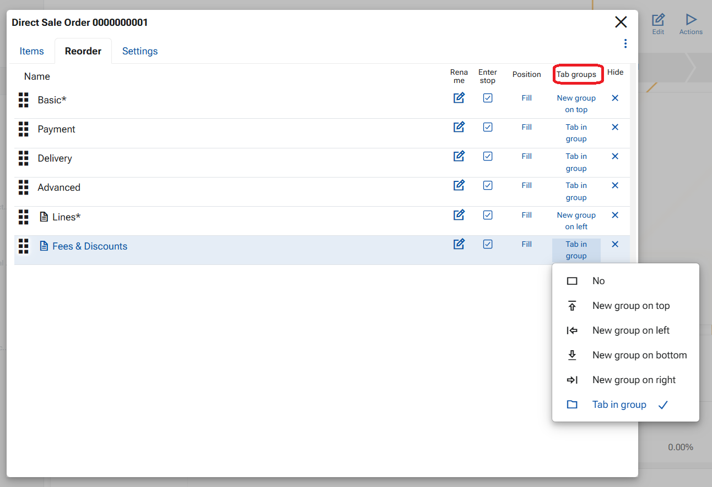
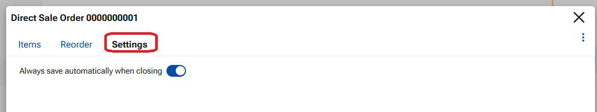

How to customize form in ERP.net Web Client
A Form is the topmost core UI component in the Web Client. It represents a single page and displays data through a structured, user-friendly interface composed of multiple panels. A form can function as the home page of a module, where different sections are shown, or as a single-record form, which presents all main, related, and detailed data for one record.
Form customization allows users to personalize which panels are displayed on a form and how they are arranged.
To start customizing a form, open the Form menu (three large vertical dots) and select Customize form. A settings screen opens on top of the form with three tabs: Items, Reorder, and Settings.
Items tab
The Items tab defines which panels are available in the form.
From this tab, you can enable or disable:
- Main panels
- Detail panels
- Related data panels
- Widgets
- Tiles
- Multiple instances of the Main panel
Only panels enabled here can be arranged and displayed in the form.

Reorder tab
The Reorder tab controls how panels are arranged within the form.
You can:
- Reorder panels using drag and drop
- Rename panels
- Hide panels
- Define panel Position
- Group panels as Tabs
Panel position
The Position option defines where a panel appears in the form:
- Fill – occupies the main content area (most commonly used)
- Left – displayed on the left side of the form
- Right – displayed on the right side of the form

Grouping Panels into Tabs
Panels can be grouped into tabs within a host panel using the Tab groups option.
A new tab group can be created in one of four directions:
- New group on top
- New group on right
- New group on left
- New group on bottom
- Choose the panel that will act as the host panel.
- Set its option to New group in the desired direction.
- For each panel that should appear inside this group, set its option to Tab.
Panels marked as Tab are displayed as tabs within the host panel.

Form Settings
The Settings tab contains global behavior options for the form. Currently available is config option- Always save on close – when enabled, all changes made in a record are automatically saved when the button X Cloes is pressed.

Important
When finished, close the customization screen using the X button. Click the red Save layout button in the top ribbon to save the changes persistently.
An example of a customized single-record form: